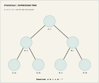

Reading an Expression Tree as a Postfix Program
An expression tree can make postfix notation less mysterious: finish each branch before visiting the operation above it. The Learning Lab expression-tree board turns that traversal into an arrangement of removable tokens.
One expression, two readable forms
The 196 × 164 mm board contains seven wells and tokens for a, b, +, c, d, -, and *. Arrange the tokens to represent (a + b) * (c - d). The tree communicates precedence spatially; a postorder walk produces a b + c d - *.

This gives a useful bridge between algebraic notation and RPN. Before a calculator key is pressed, the learner can point to the branch that must be completed, record its value, and identify the next operation in the traversal.
The important distinction
Postorder is a way to read an expression tree. ENTER is a calculator action that manages stack entry. They are related, but they are not interchangeable. A useful lesson keeps the parsing step and the key sequence separate, then connects them by following the resulting stack state.
The board is a generated prototype resource. It needs print-fit checks, marking validation, educator review, and classroom testing before it can support stronger teaching claims.
Give postorder a physical route
An expression tree makes postfix notation less mysterious because the operator is visibly waiting above its completed inputs. Start with (a + b) * (c - d). Build the plus branch, build the minus branch, then place multiply above both. Reading the tokens in postorder produces a b + c d - * because each branch is complete before its parent operation is read.
That is a different lesson from ENTER. Postorder tells us the operation order implied by an algebraic expression. ENTER manages repeated numeric entry on an RPN calculator. They meet when someone keys a program, but separating them prevents a learner from believing that ENTER is just another algebra operator.
The public Learning Lab release includes the board, removable tokens, reference cards, and teacher booklet. A useful extension is to remove one operation token and ask learners to supply it from the desired postfix program. The activity creates a bridge from algebra notation to the stack model used in the app and handheld.
Extend the board without changing the rule
Once a learner can read the seven-token example, introduce one new branch rather than a completely different notation. The rule stays stable: finish the left and right subtrees, then read their parent operation. That repeatable visual rule gives a teacher a way to add difficulty while retaining the same RPN explanation.